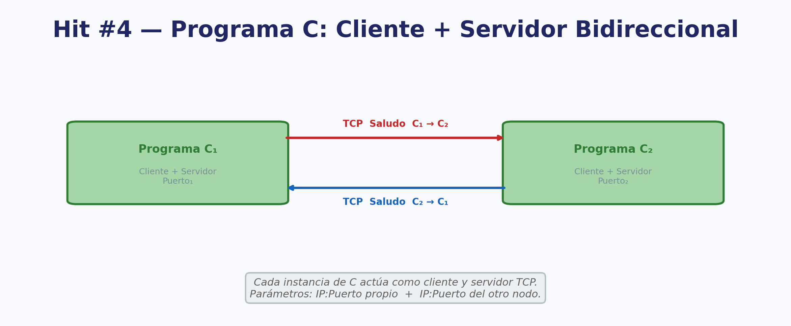
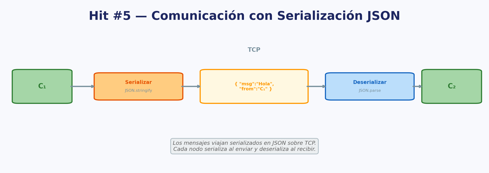
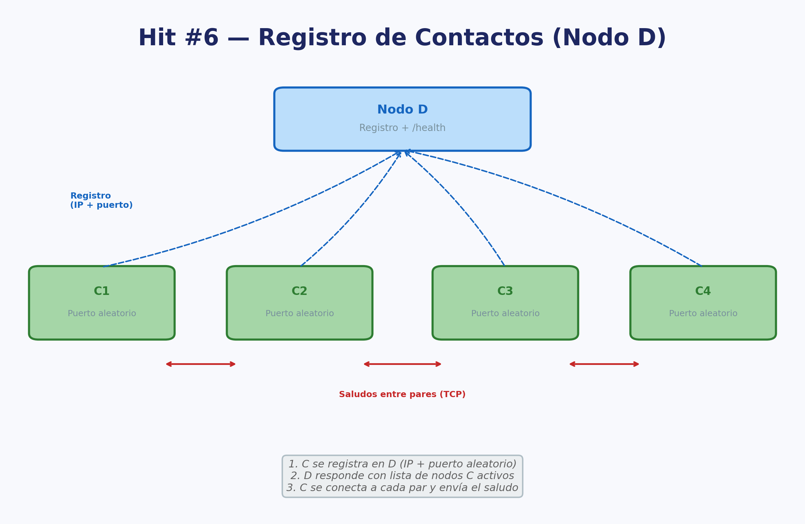
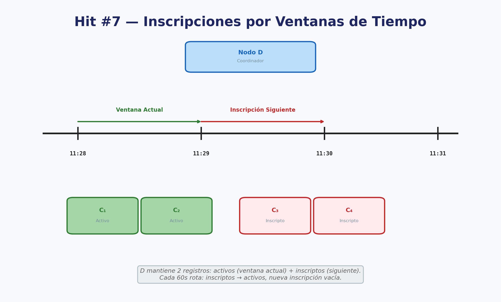
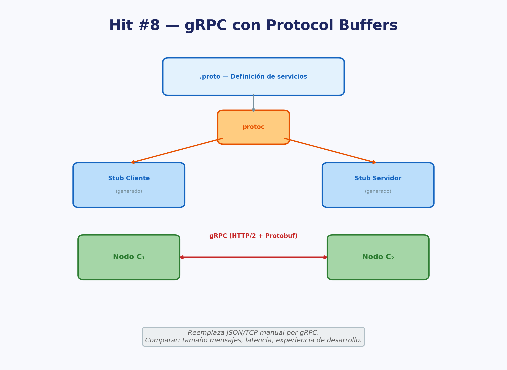

Trabajo Práctico Nº 1
Conceptos básicos para la construcción de Sistemas Distribuidos
Fecha de entrega: 17/03/2026
Requisitos, consideraciones y formato de entrega
- Integrar herramientas de IA en su ciclo de vida de desarrollo (Cursor, ChatGPT/Codex, Claude, GitHub Copilot, etc.). Se espera que las utilicen como asistentes para codificar, depurar y documentar. En el informe, mencionen qué herramientas usaron y cómo les ayudaron.
- Se puede implementar con cualquier lenguaje dentro de los que se mencionaron en clase (node, python, java).
- Deben incluir una grabación video que se debe subir al repositorio donde se expliquen los servicios, componentes y configuraciones que tomaron en cuenta. Esto debe mostrar que comprenden cada punto y su desarrollo.
- Pruebas Unitarias y de Integración: Incluir un conjunto mínimo de pruebas automatizadas que cubren las funcionalidades críticas del proyecto.
- Generar un informe detallado que incluya respuestas a consultas, métricas y tiempos de evaluación, gráficas, diagramas de arquitectura y conclusiones.
- Mantener un repositorio público en un servicio de
control de versiones como GitHub, Bitbucket o GitLab. Cada ejercicio
(HIT #) debe contar con una carpeta y un README.md explicativo.
- El README.md de cada Hit debe incluir como mínimo: instrucciones para ejecutar el proyecto, diagrama de arquitectura, y decisiones de diseño tomadas.
- Compilar la aplicación para ejecución desde la terminal, con recursos preparados para ser desplegados directamente sin necesidad de abrir un IDE.
- Implementar un pipeline de CI/CD que automatice la compilación y el despliegue de la aplicación con cada nueva versión de código (GitHub Actions).
- Desplegar el servicio en un entorno público accesible desde Internet para su evaluación en producción (Despliegue en la nube).
- Proporcionar un endpoint público para cada servicio que permita verificar el estado de los principales servicios. No requiere GUI, puede devolver un JSON (Key=Servicio, value=Status). Ejemplos: https://status.lemon.me/, https://health.aws.amazon.com/health/status.
- Gestionar y mantener registros de actividades (logs) en memoria y disco.
- Seguridad:
- No commitear
.env, credenciales ni secrets al repositorio. Configurar.gitignoreapropiado desde el inicio. - Gestionar credenciales por ambiente de forma segura (GitHub Secrets, Secret Manager / Parameter Store). Zero static keys: autenticarse contra cloud providers vía Workload Identity / OIDC.
- Para registros Docker: usar image pull secrets o Workload Identity en lugar de enviar credenciales en payloads.
- Incluir gitleaks [GITLEAKS] en el pipeline de CI — si detecta un secret hardcodeado, el pipeline debe fallar.
- Si expusieron un secret accidentalmente, revóquenlo de inmediato y generen uno nuevo: queda en el historial de Git aunque después lo eliminen.
- No commitear
Contenidos del programa relacionados
- U1.1–U1.5 Conceptos, características, hardware, software y diseño de Sistemas Distribuidos.
- U1.6 Comunicación en SD: modelo Cliente-Servidor, protocolos, direccionamiento, bloqueo.
- U1.7 Migración de procesos, uso de buffer en C/S, primitivas confiables y no confiables.
- U1.8 Llamado a Procedimiento Remoto (RPC): operación, transferencia de parámetros, conexión dinámica, casos de fallo.
Práctica
Un sistema distribuido [TAN17, COU11] surge como respuesta a la necesidad de escalar horizontalmente. En un sistema distribuido se requiere la presencia de al menos dos nodos interconectados; en el corazón del sistema yace el procesamiento asincrónico y descentralizado.
La esencia del procesamiento asincrónico entre dos nodos radica en la comunicación entre ellos, donde el protocolo utilizado juega un papel central. Es importante tener presente desde el inicio las falacias del cómputo distribuido [WAL94]: nunca asumir que la red es confiable, que la latencia es cero, ni que el ancho de banda es infinito.
Para comprender este concepto de manera más concreta, imaginemos dos procesos A y B. A desea iniciar una interacción con B y espera una confirmación de recepción.
Toda comunicación en red se basa en el principio de cliente-servidor. En este contexto, consideramos al nodo que está pasivamente a la espera de una solicitud como el servidor (en este caso B), y al nodo que toma la iniciativa para iniciar la comunicación como el cliente (en este caso A).
Hit #1
Elaboren un código de servidor TCP [STE03] para B que espere el saludo de A y lo responda.
Elaboren un código de cliente TCP para A que se conecte con B y lo salude.
Hit #2
Revise el código de A para implementar una funcionalidad que permita la reconexión y el envío del saludo nuevamente en caso de que el proceso B cierre la conexión, como por ejemplo, al ser terminado abruptamente.
Hit #3
Modifique el código de B para que si el proceso A cierra la conexión (por ejemplo matando el proceso) siga funcionando.
Hit #4
Refactoriza el código de los programas A y B en un único programa, que funcione simultáneamente como cliente y servidor. Esto significa que al iniciar el programa C, se le deben proporcionar por parámetros la dirección IP y el puerto para escuchar saludos, así como la dirección IP y el puerto de otro nodo C. De esta manera, al tener dos instancias de C en ejecución, cada una configurada con los parámetros del otro, ambas se saludan mutuamente a través de cada canal de comunicación.

Hit #5
Modifiquen el programa C para que los mensajes se envíen en formato JSON [JSON], serializando y deserializando al enviar/recibir.

Hit #6
Cree un programa D, el cual actuará como un “Registro de contactos”. Para ello, en un array en RAM, inicialmente vacío, este nodo D llevará un registro de los programas C que estén en ejecución.
Además, el nodo D debe exponer un endpoint HTTP
/health que devuelva el estado del servicio en
formato JSON (cantidad de nodos C registrados, uptime, estado general).
Este endpoint será utilizado como health check público del sistema.
Modifique el programa C de manera tal que reciba por parámetros únicamente la IP y el puerto del programa D. C debe iniciar la escucha en un puerto aleatorio y debe comunicarse con D para informarle su IP y su puerto aleatorio donde está escuchando. D le debe responder con las IPs y puertos de los otros nodos C que estén corriendo, haga que C se conecte a cada uno de ellos y envíe el saludo.
Es decir, el objetivo de este HIT es incorporar un nuevo tipo de nodo (D) que actúe como registro de contactos para que al iniciar cada nodo C no tenga que indicar las IPs de sus pares. Esto debe funcionar con múltiples instancias de C, no solo con 2.

Hit #7
Modifique el programa C y D, de manera tal de implementar un “sistema de inscripciones”, esto es, se define una ventana de tiempo fija de 1 MIN, coordinada por D, y los nodos C deben registrarse para participar de esa ventana. Cuando un nodo C se registra a las 11:28:34 en D, el registro se hace efectivo para la próxima ventana de tiempo que corresponde a las 11:29. Cuando se alcanza las 11:29:00, el nodo D cierra las inscripciones y todo nodo C que se registre será anotado para la ventana de las 11:30. Los nodos C que consulten las inscripciones activas solo pueden ver las inscripciones de la ventana actual, es decir, los nodos C no saben a priori cuáles son sus pares para la próxima ventana de tiempo, solo saben los que están activos actualmente. Recuerde almacenar las inscripciones en un archivo de texto con formato JSON. Esto facilitará el seguimiento ordenado de las ejecuciones y asegurará la verificación de los resultados esperados.
Para simplificar el problema, imagine que D lleva dos registros: un listado de los nodos C activos en la ventana actual, y un registro de nodos C registrados para la siguiente ventana. Cada 60 segundos el nodo D mueve los registros de las inscripciones futuras a la presente y comienza a inscribir para la siguiente ronda.

Hit #8 — gRPC / Protobuf
Refactoricen la comunicación del Hit #5 (mensajes JSON sobre TCP) reemplazándola por gRPC [GRPC] con Protocol Buffers [PBUF] — la materialización moderna del concepto clásico de RPC [BIR84, SRI95]. Para ello:
- Definan un archivo
.protoque describa los mensajes y servicios de comunicación entre los nodos C y D. - Generen los stubs de cliente y servidor con el compilador
protocpara el lenguaje que hayan elegido. - Reemplacen la serialización/deserialización JSON manual por las llamadas gRPC generadas.
Comparen en el informe: tamaño de los mensajes en bytes (JSON vs Protobuf), latencia de las llamadas y experiencia de desarrollo (código manual vs código generado).

Referencias y Bibliografía
- [BIR84] Birrell, A. D. & Nelson, B. J. (1984). “Implementing Remote Procedure Calls”. ACM Transactions on Computer Systems, 2(1), 39–59.
- [COU11] Coulouris, G., Dollimore, J., Kindberg, T. & Blair, G. (2011). Distributed Systems: Concepts and Design (5th ed.). Addison-Wesley.
- [GITLEAKS] gitleaks — Protect and discover secrets using Gitleaks. https://github.com/gitleaks/gitleaks
- [GRPC] gRPC Documentation. https://grpc.io/docs/
- [JSON] JSON.org — Introducing JSON. https://www.json.org/
- [PBUF] Protocol Buffers Documentation. https://protobuf.dev/
- [SRI95] Srinivasan, R. (1995). “RPC: Remote Procedure Call Protocol Specification Version 2”. RFC 1831, IETF. https://datatracker.ietf.org/doc/html/rfc1831
- [STE03] Stevens, W. R. (2003). UNIX Network Programming, Volume 1: The Sockets Networking API (3rd ed.). Addison-Wesley.
- [TAN17] Tanenbaum, A. S. & Van Steen, M. (2017). Distributed Systems: Principles and Paradigms (3rd ed.). Pearson.
- [WAL94] Waldo, J., Wyant, G., Wollrath, A. & Kendall, S. (1994). “A Note on Distributed Computing”. Sun Microsystems Laboratories, TR-94-29. https://scholar.harvard.edu/waldo/publications/note-distributed-computing